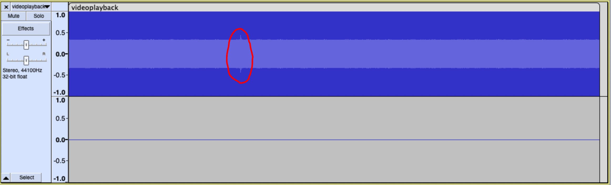
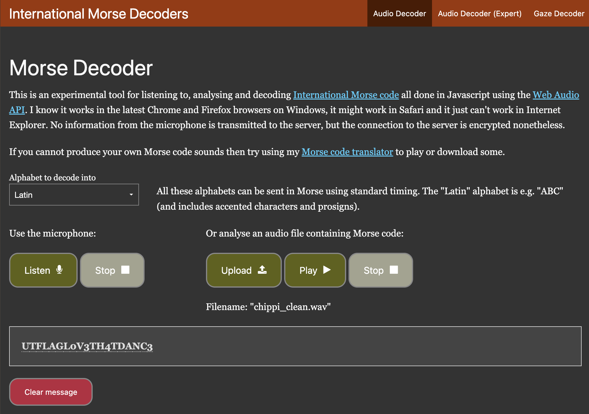

Well, this is an audio challenge, so my first step was to download the audio from youtube and open in up in audacity
Looking at this waveform, I saw a spike at around 3 hours in. Listening to that section, you can hear clear morse code beeps.
From what I've seen, people took 1 of 3 approaches at this point:
My idea was to take a segment of audio that synced up with the music to act as sort of a baseline for the background noise, then invert it so that it cancels out everything but the code.
I created two tracks, one for the encoded audio and one for the baseline. I first synced them by ear, and then to get as precise as possible I zoomed in extremely close and tried to perfectly match the two waveforms up.
The waveforms were not a perfect match (something something audio compression, idk) but they were close enough to cancel out most of the song and produce this demonic sounding clip where you can hear the morse much more clearly.
This web-based Morse Code Adaptive Audio Decoder was able to do the rest of the work.
